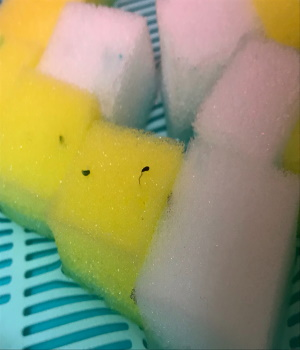
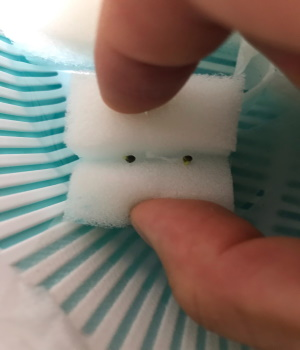

やっと芽が出るのが確認できた。サンチュはスポンジから飛び出るほど芽が出てきた。一方小松菜の方は芽が出てきたが、伸びてくる気配がない。
 ネットではここから二葉が出るまでこのままで育てる。しかし、ここから一向に変化が見られない...
育てると同時にＭ5stackとDHL11（気温センサー）を使って気温を計測する。計測した値をdoyolab IOTサービスを使ってグラフ化して記録していく。
最近は気温よりも水温を測定した方が水耕栽培に役立つと思ったので、防水水温センサーを購入して動かそうと試みている。しかし、うまく値を取ってくれないので悪戦苦闘中...